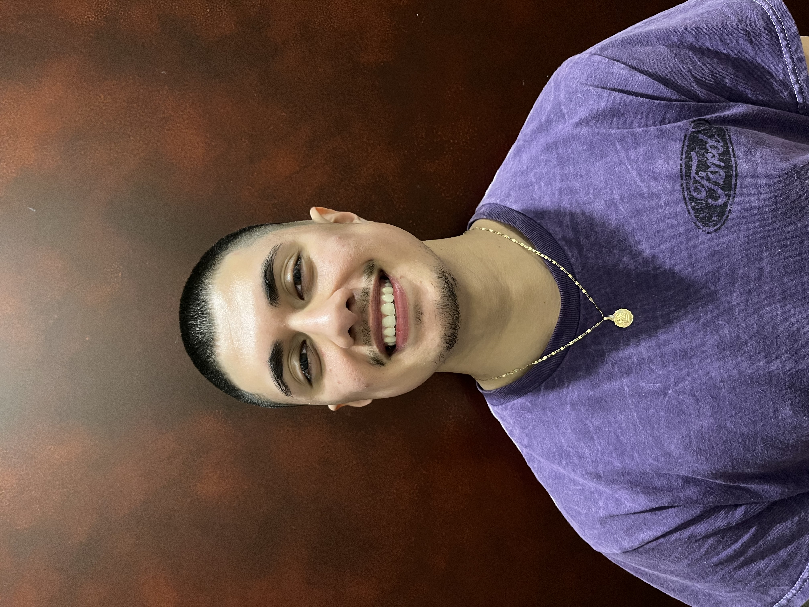
Alex Hernandez
Mechanical Design Engineer
About me
I am an engineer raised in western Iowa with my BSME from Iowa State University. I have professional experience in aerospace and mechanical design industries, with a focus in manufacturing, rapid prototyping, and data analysis.
Over the past 5 years, I have gained valuable experience as a mechanical engineer through a Boeing sponsored project course called Make2Innovate and during my time at the Ames National Laboratory where I gained skills related to data analysis. I got accustomed to working in multi disciplinary teams and operating under strict deadlines.
Projects
Reverse Engineering Manure Spreader
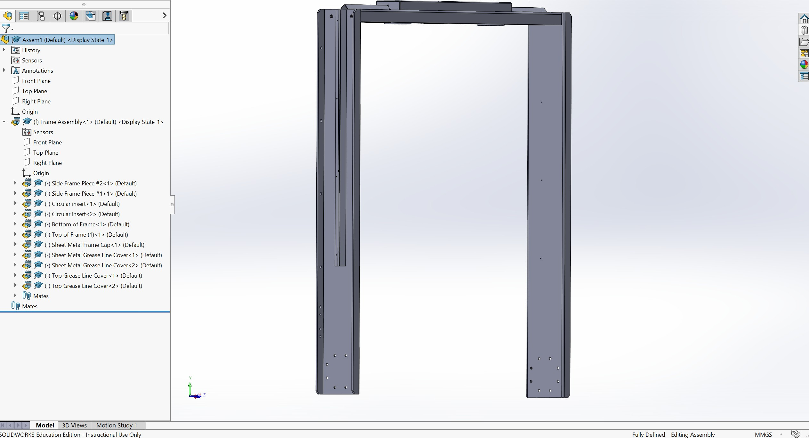
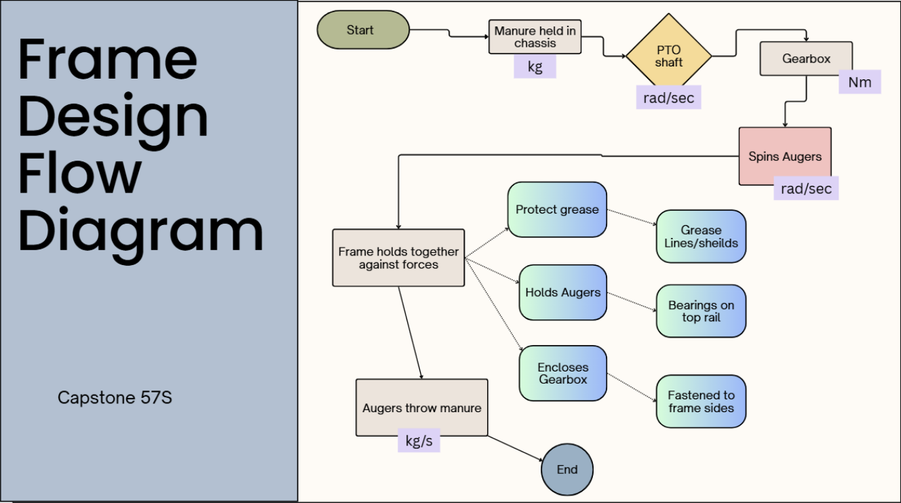
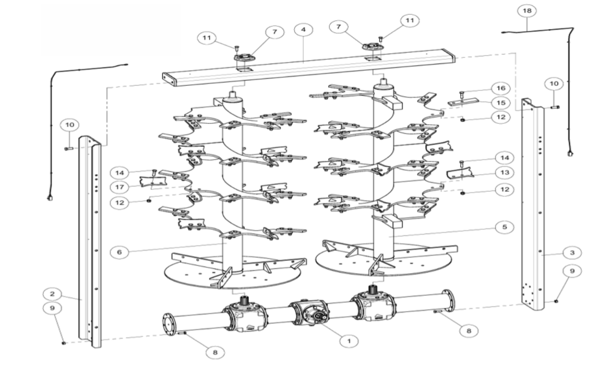
FSAE Vehicle Suspension Optimization
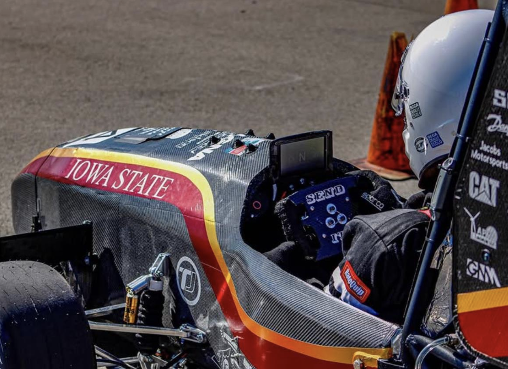
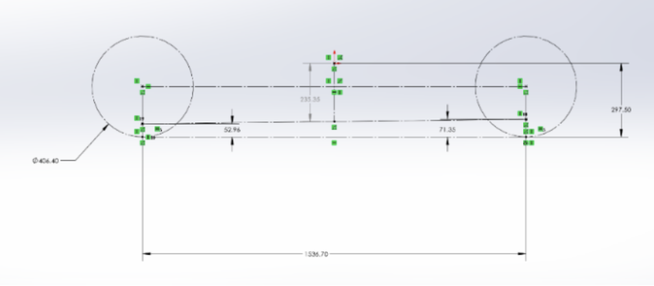
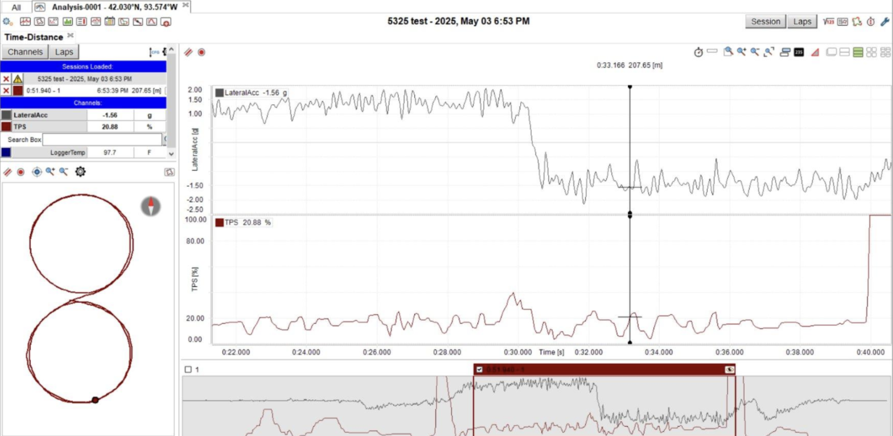
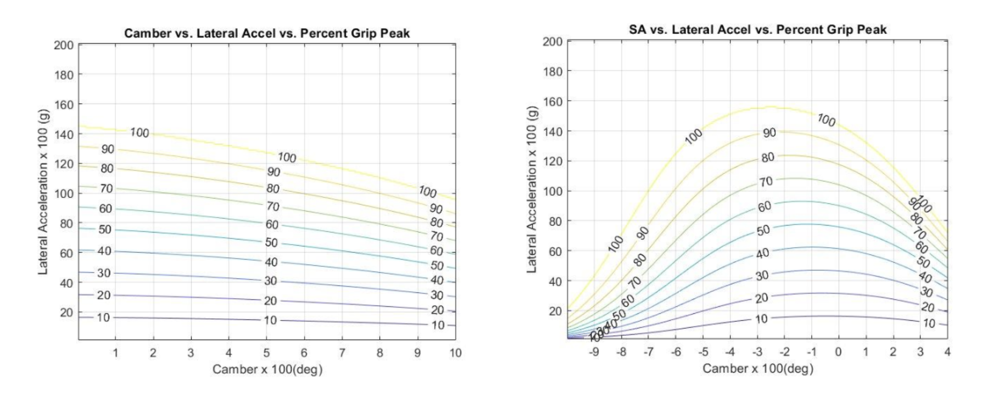
Make2Innovate — CyLaunch
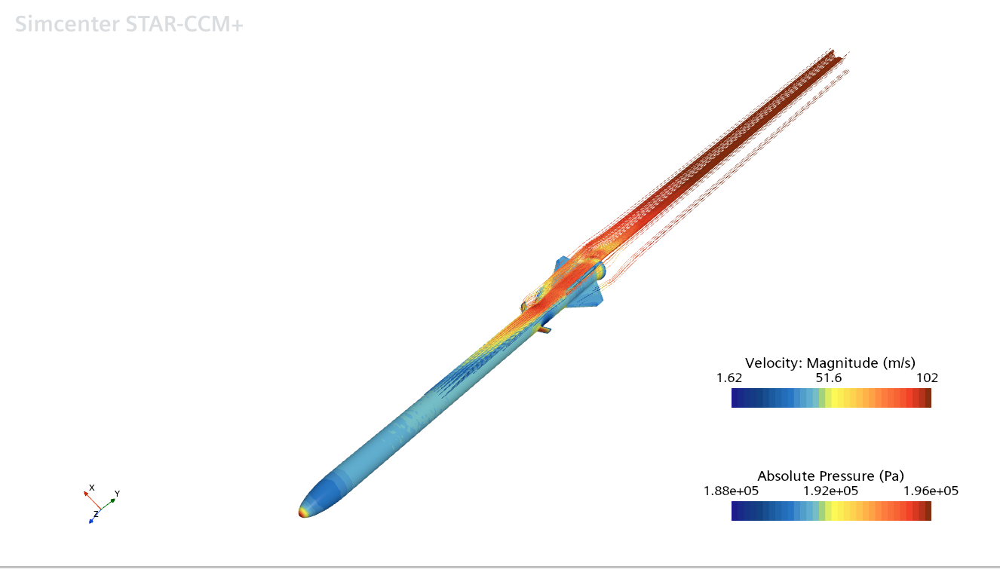
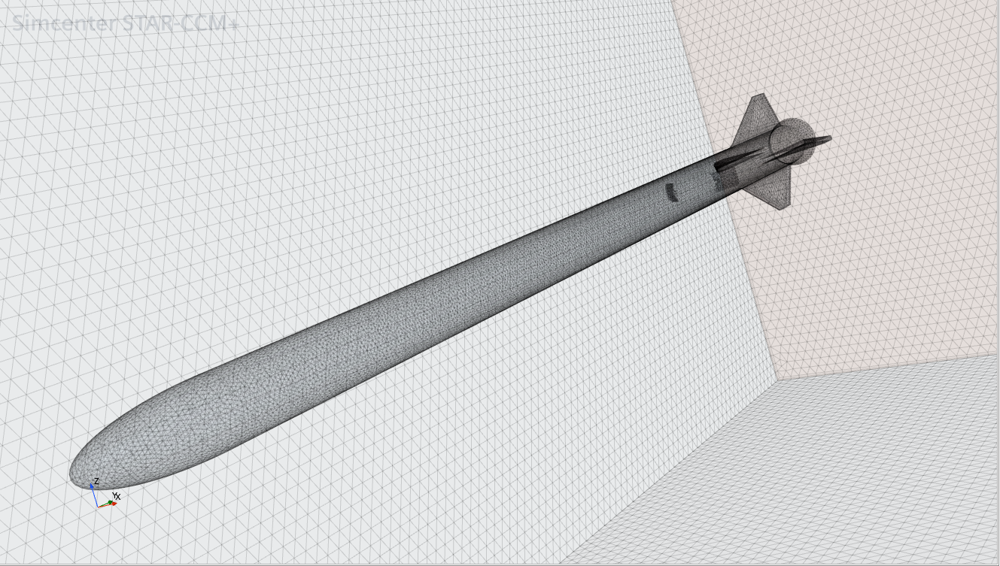
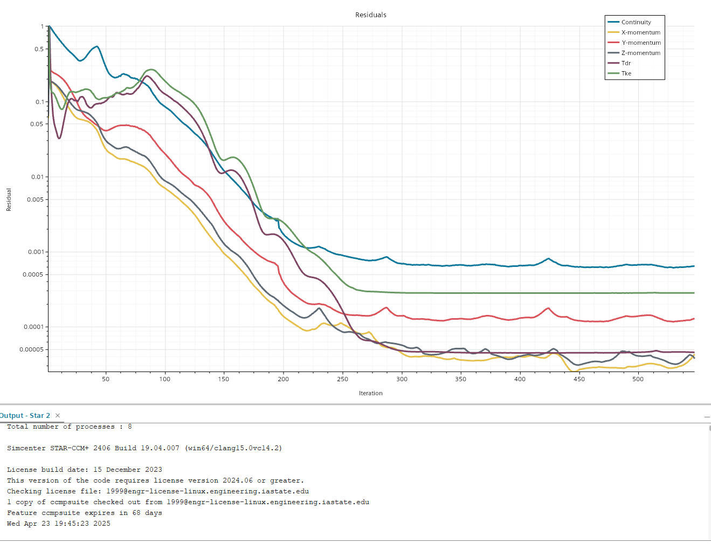
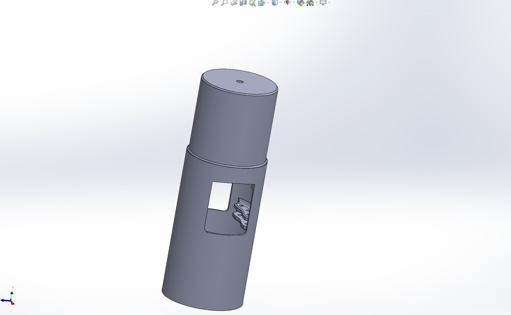
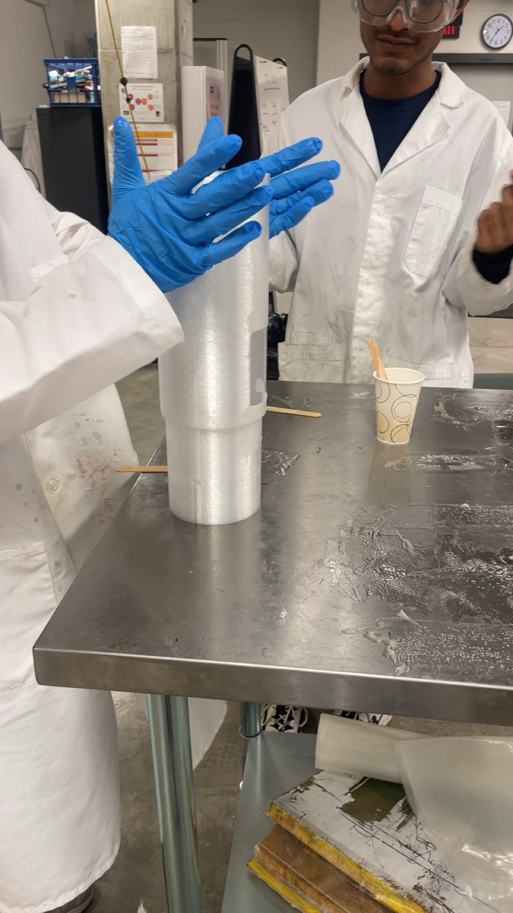
Experience
-
CyLaunch
January – May 2025
- Facilitated CAD design of the air brake assembly using SolidWorks.
- Oversaw simulation operations of the rocket using Star CCM+ software.
- Programmed actuation system using an Arduino board.
-
Ames National Laboratory
June – August 2023
- Developed machine learning models to find patterns in large datasets.
- Utilized Python libraries to do prediction modeling for possible new properties on materials for batteries.
Education
-
Iowa State University
August 2021 – May 2026
- B.S. Mechanical Engineering
Links
Email: realalexhernandez@gmail.com
LinkedIn: linkedin.com/in/alexhernandez721